8/8 · 53.8 s · $0.105 · 315 lines
all checks passed
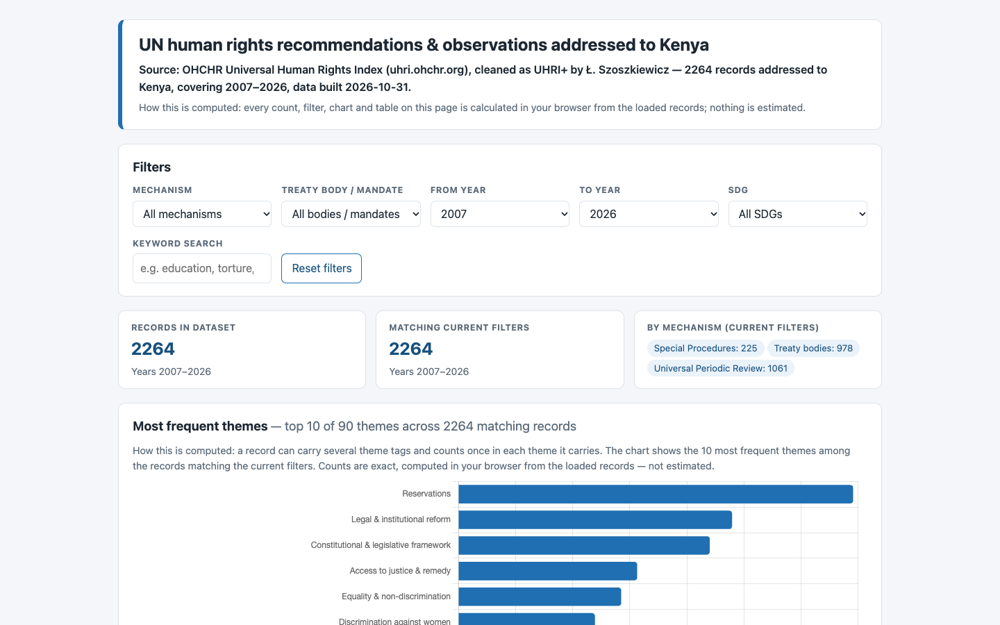
8/8 · 103.2 s · $0.033 · 293 lines
all checks passed
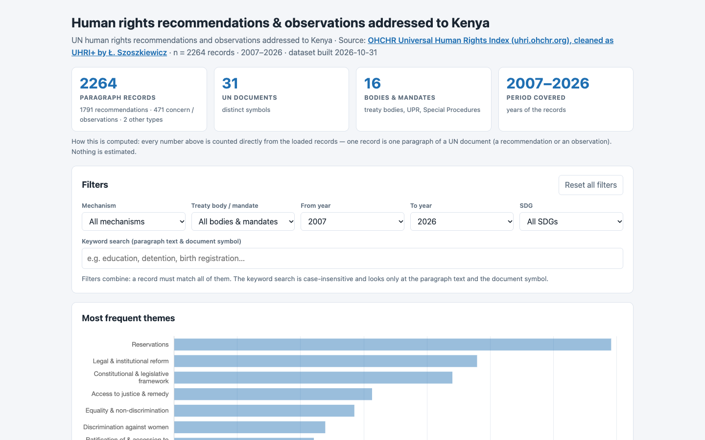
8/8 · 217.3 s · $0.093 · 567 lines
all checks passed
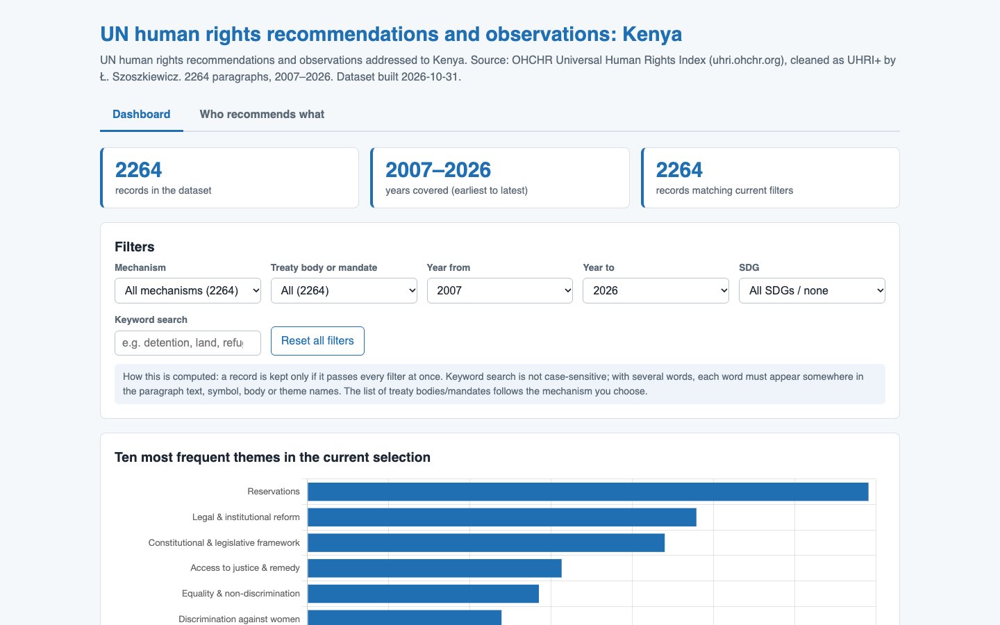
7/7 · 81.2 s · $0.185 · 516 lines
all checks passed
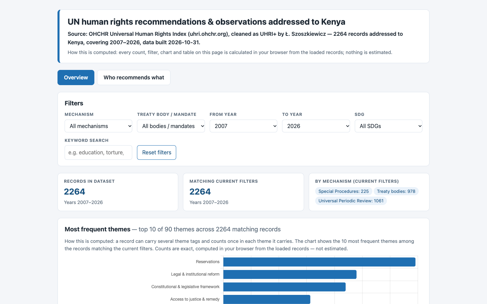
7/7 · 65.0 s · $0.031 · 473 lines
all checks passed
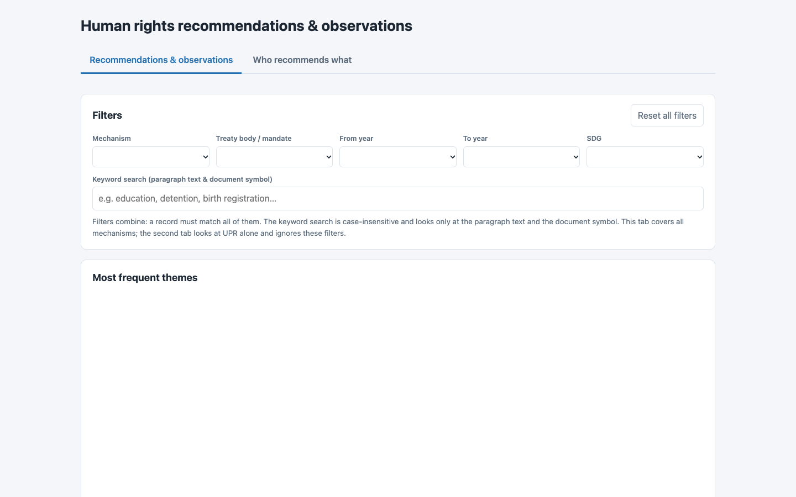
4/7 · 319.2 s · $0.152 · 634 lines
no_console_errors, table_min_rows, text_matches
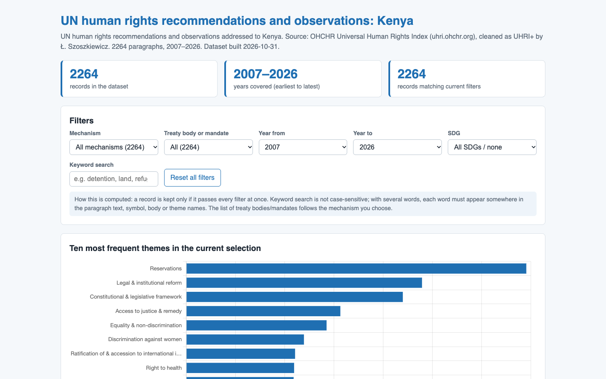
6/6 · 78.6 s · $0.180 · 466 lines
all checks passed

6/6 · 82.9 s · $0.031 · 455 lines
all checks passed

6/6 · 215.4 s · $0.107 · 775 lines
all checks passed
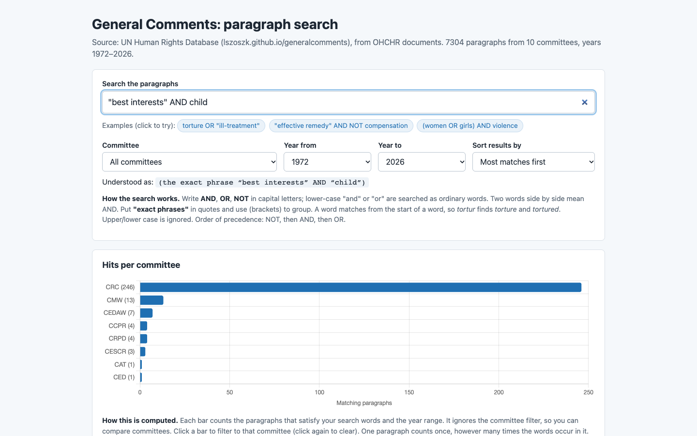
8/8 · 69.5 s · $0.125 · 335 lines
all checks passed
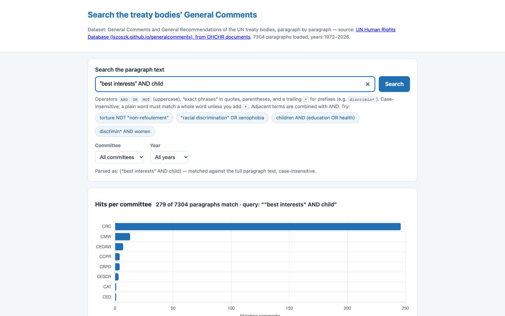
8/8 · 152.5 s · $0.058 · 488 lines
all checks passed

0/8 · 391.5 s · $0.142 · 0 lines
no_console_errors, no_network, uses_workshop_data, chart, search_box, button_matches, source_matches, text_contains_after_search
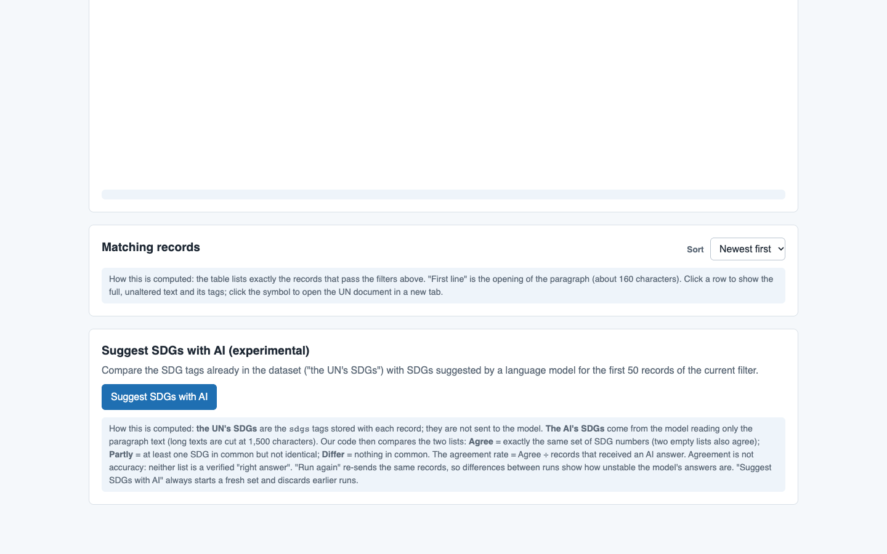
5/7 · 135.6 s · $0.261 · 380 lines
calls_studio_ask, batches_max
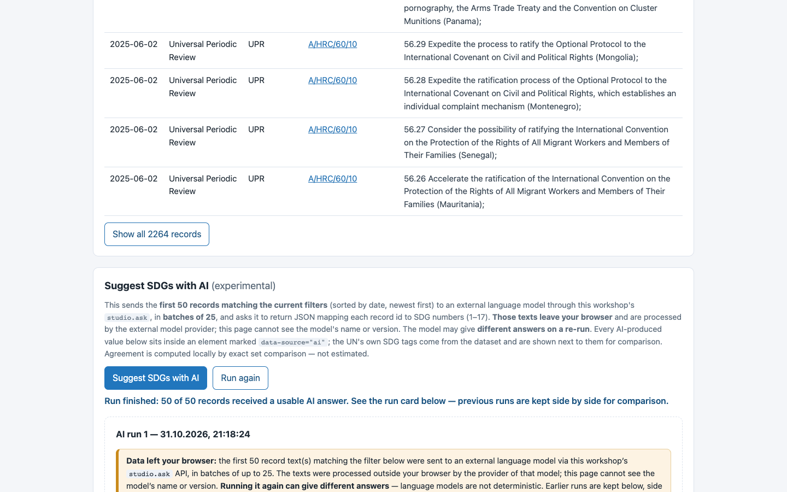
7/7 · 99.3 s · $0.037 · 489 lines
all checks passed

0/7 · 355.2 s · $0.144 · 0 lines
no_console_errors, no_network, uses_workshop_data, calls_studio_ask, batches_max, text_matches, button_matches
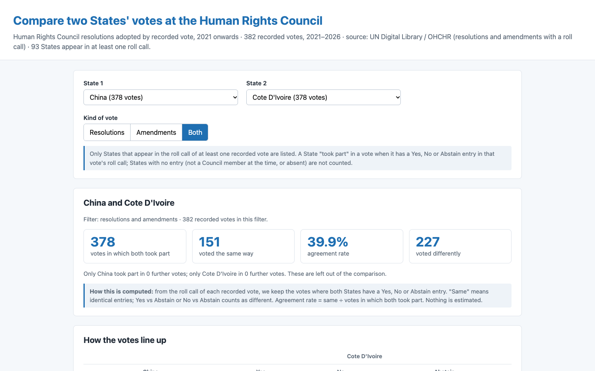
6/6 · 58.3 s · $0.108 · 280 lines
all checks passed
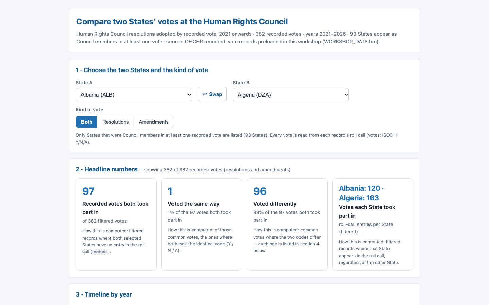
5/6 · 100.6 s · $0.039 · 405 lines
table_min_rows

0/6 · 353.6 s · $0.142 · 0 lines
no_console_errors, no_network, uses_workshop_data, chart, controls_min, table_min_rows